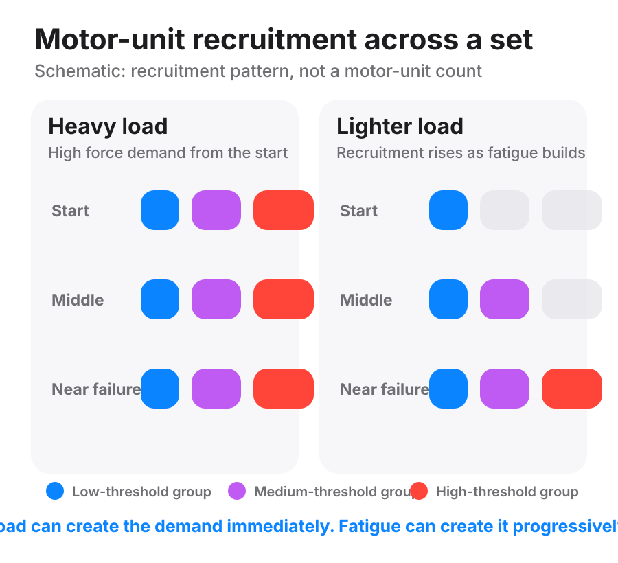

The nervous system switches on muscle fibres in a fixed order. Small ones fire first, big ones fire last.
A muscle is not one single unit that switches entirely on or off. It contains many groups of fibres, each controlled by the nervous system. One nerve cell and the fibres it controls together are a motor unit (motor unit).
The nervous system does not recruit every motor unit at once. It brings them in from smaller to larger as the demand for force rises. This order is the size principle (size principle). Small, slow, fatigue-resistant units, largely Type I fibres, fire first. Large, fast, quick-tiring units fire last (high-threshold motor units).

Why load changes recruitment. With a heavy load, the force needed is high from the first rep. The nervous system has to recruit a large share of the motor-unit pool straight away.
With a light load, the early force needed is lower. Small motor units can handle the early reps on their own. As those units tire, the nervous system has to raise its drive and bring in progressively larger units to hold the force.
This is why light-load training depends so heavily on how close it gets to failure. If the set stops while the small units can still do the job, the big units may never be called on at all. Heavy loading reaches them much earlier, because the weight itself creates the demand.
Heavy load | 80-100 | The load recruits them from rep one
Light load | 30-60 | Only fatigue recruits them, close to failure
columns: Heavy load, at or above 80% of the 1RM (1RM) | Light load, roughly 30 to 60% of the 1RM
What happens: Force demand is immediate. The nervous system sends near-maximal drive and recruits close to the whole pool from the first rep | Only the small units fire at first. As they tire, the nervous system raises its drive to hold the force, bringing in bigger units one after another
What full recruitment costs: Nothing. The load does it | Fatigue. Only reached by working close to failure
A worked case. Picture two leg-extension sets on the same light load.
In the first, she stops comfortably, well before failure. The early-recruited small units do most of the work, and the big units may contribute almost nothing. In the second, she pushes the same light load until the set is genuinely hard. As the small units tire, the nervous system raises its drive, and the big units come in to help hold the force. The load hasn't changed between the two sets. The recruitment demand has.
How you can see it. On the last reps of a hard set, the reps slow down even though full effort is being made. That slowing goes with the big units coming online. It also goes with every already-working fibre losing force capacity as it tires. The next page explains why a tiring muscle moves a fixed load more slowly, whichever units are firing.
Slowing is not a dial a coach can read recruitment off directly. It is something you can watch on video, though, which is why video audits effort better than a self-rating of it. Effort and intensity uses that slowing as its audit of effort, not of recruitment.
The deeper explanation. The size principle is a property of the nervous system, not a motivational choice. A small nerve cell has a small surface, so a given signal from the brain fires it easily. A large nerve cell needs a much stronger signal to reach its own threshold. The order is a property of the wiring. A lifter cannot decide to recruit differently, and trying harder does not change it.
What this means for coaching. This is the mechanism under Effort and intensity. How close training gets to failure matters far more on a light load than a heavy one. On a heavy load, the recruitment was already bought by the weight. On a light load, closeness to failure is the purchase. A light set stopped well short of failure never called the big fibres in at all.
size principle: Motor units switch on from smallest to largest as the demand for force rises.
motor unit: One nerve cell and the bundle of muscle fibres it switches on. A muscle is made of many, from small to large.
high-threshold motor units: The large motor units that drive the biggest, fastest fibres. They switch on last, only when the demand for force is high or the smaller units have tired.
1RM: The heaviest weight she can lift once with good form. Loads are often written as a percentage of it.